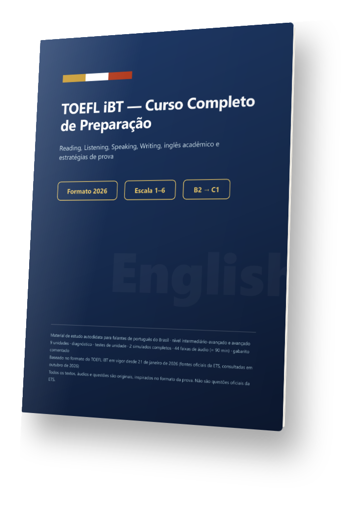
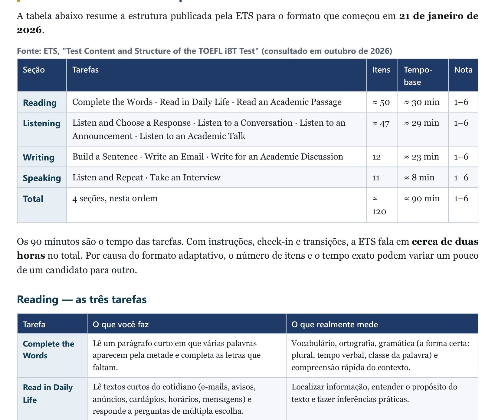
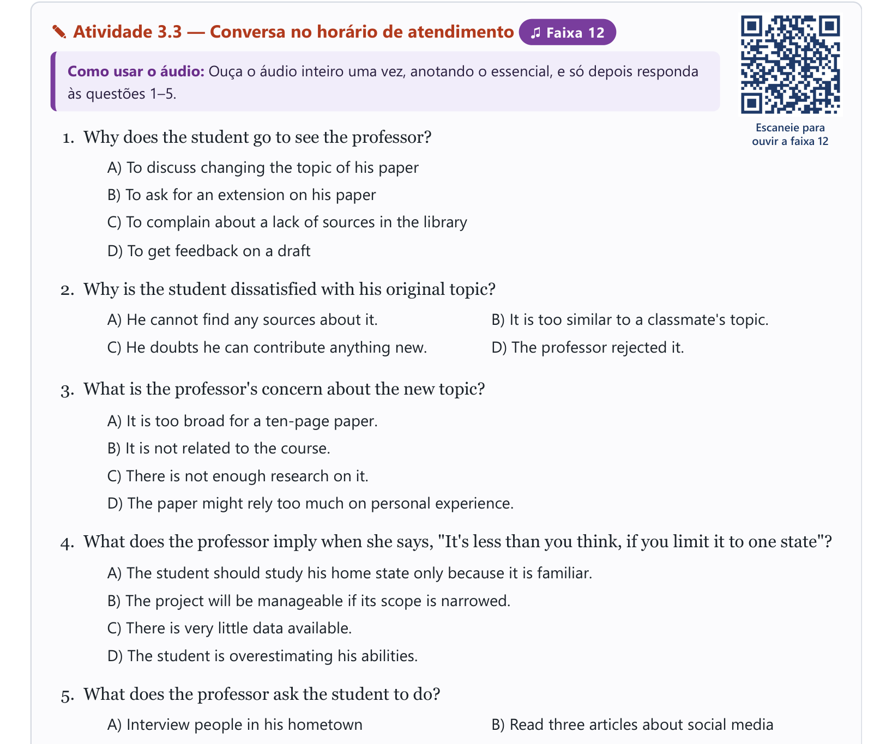

Desde janeiro de 2026, a prova tem tarefas novas e escala de 1 a 6. Este curso foi escrito para esse formato, com 44 faixas de áudio que abrem por QR code.

Para quem precisa comprovar proficiência e quer conhecer cada tarefa antes do dia da prova.
Para quem tem uma nota mínima a atingir e precisa de um plano de estudo com prazo.
O curso não começa do zero: parte de um diagnóstico e treina o que a prova realmente cobra.


Na amostra grátis há uma atividade com QR code: aponte a câmera do celular e teste o áudio.
| Conteúdo | Diagnóstico · Unidade 1 (o exame) · Reading · Listening · Speaking · Writing · gramática acadêmica · vocabulário · paráfrase e síntese · estratégias · 2 simulados · rubricas · glossário. |
|---|---|
| Áudio | 44 faixas on-line (≈ 90 min), em vozes sintéticas (principalmente sotaque americano, com algumas vozes britânicas), acessadas por QR code ou link. Também é possível baixar as faixas. |
| Formato | PDF de 206 páginas com sumário clicável. |
| Idioma | Explicações em português; textos, áudios e modelos em inglês. |
| Acesso | Enviado automaticamente pela plataforma de pagamento logo após a confirmação. |
O curso segue o formato em vigor desde 21/01/2026 e explica o que mudou em relação ao antigo, inclusive como converter exigências escritas na escala antiga.
Intermediário ou acima. O diagnóstico indica por onde começar.
Cada atividade de áudio tem um QR code. Ao apontar a câmera do celular, a página abre na faixa certa, com um botão de tocar e a instrução da atividade.
O curso traz rubricas, respostas-modelo e um protocolo de autoavaliação. Não inclui correção individual.
Você tem 7 dias para pedir o reembolso pela própria plataforma de pagamento.
Garantia de 7 dias: se não for para você, peça o reembolso pela plataforma de pagamento.